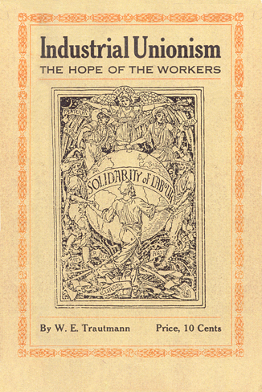

Industrial Unionism: The Hope of the Workers
By William Trautmann (1913)
DEDICATED
to my collaborators
in the earlier days of industrial union
propaganda
who, on November 5th, 1904, and the months thereafter, helped to shape affair for the successful inauguration of an organization in which the thoughts and experiences of all these men were expressed and crystallized, namely:
W. D. HAYWOOD, EUGENE V. DEBS, FRANK BOHN, CLARENCE SMITH, W. L. HALL, THOMAS J. HAGERTY, DANIEL DE LEON, GEORGE ESTES and JOHN RIORDAN.
IN TRUE AND SINCERE FELLOWSHIP
W. E. TRAUTMANN
MISREPRESENTATION.
If misrepresentation could destroy a new thought, an idea, or a movement as the expression of theories crystallized, then "revolutionary industrial unionism" would have been dead long ago. The adherents to the principles and the program would have been buried with the death of the idea. They would today he remembered only as mischievous confusers of minds trained in the school of dogmatism. The advocates of implied faith in the textbooks of never-to-be disputed authorities on social. phenomena would have another rest. Questions would no longer need answering; the proletariat could trust its fate in the hands of and to the intellectual guardianship of these self-styled leaders.
But as it is, industrial unionism is one of the always present spectres haunting the world. All the powers, political, ecclesiastical, scholastical, and industrial, are combining, in every nook and corner where the "undesirable" industrial union advocate appears, to exorcise the evildoer, by misrepresentation, by misinterpretation of his objects, his methods, and the functions that the industrial union is to perform in the social array of forces.
Of course, it has always been thus with any new movement for the emancipation of the working class, or of any other downtrodden class ere this. The uninitiated will give credence to all the stories told in maniform, manifold, and many garbled ways, rather than take the trouble to listen to the message of the industrial unionist, grounded well in the knowledge of things as they are.
It would look discouraging, indeed, were not passing events the best vindicators of the advocates of this kind of unionism. By arguments and the logic of clear reasoning, supported by facts in industrial life, a propaganda was carried on for over a decade, but years of efforts to arouse the workers bore few results. It was hard to draw them away from the pitfalls prepared by the enemies of the working class, pitfalls covered thinly with the brushwood of high-sounding phrases. Apologizers for the ignorance and indifference of the workers had some justification in their claims that the mass moves slowly, and only in the footpaths set by leaders. And the workers were told to look to them as the divinely-selected redeemers.
But the tide is turning. The workers, in defiance of time-honored customs have begun to think, to meditate and to act. In ever-increasing numbers, as if stirred by a deeper knowledge of the principles underlying industrial unionism, they have begun to move of their own accord and to take matters into their own hands. Perhaps great "leaders" have been blind to the fact that the economic forces in society are among the great factors in overturning all the vague theories and plans upon which the would-be deliverers believe a benevolent kind of State Socialism could be ushered into existence. And the Proletarian class can only rejoice that baneful influences are broken by the irresistible force of events.
Indeed, a healthy sign of progress is evinced everywhere. Object lessons are forcing themselves upon our observation. For instance, the coal miners of Illinois, when they went on strike, April 1st, 1910, courageously defied the orders of the district officers of the United Mine Workers, Walker, McDonald and others. The rank and file, in violation of a sacred contract induced the engineers, fire-men, pumpmen and other mechanics in the mines to make common cause with them'. Militia called for by the same officers to force obedience to their orders, failed to frighten the strikers. The rank and file remained triumphant by forcing these same officers i o change front in order to save their own positions, (Irk mg them even to the point where they were in turn compelled to defy the commands of the autocratic general executive board of the United Mine Workers of America. (*1)
In the Chicago Clothing Workers' strike in 1911 lasting 19 weeks, the workers three times defied the official orders to return to work under a shallow arbitration agreement. "The strikers no longer wanted to be fed by promises. they were after the substance." Only an outrageous arbitrary action could break that defy of 35,000 workers. While their ranks were broken because the leaders had the whip of hunger as their main sup-porter, the spirit of revolt of all the workers could not be destroyed by such acts. On the contrary, they learned to know the powers that the oppressors marshal to their support in their warfare upon the working class.
Hundreds of illustrations of a similar nature could be cited. But. after all, all these defiances of contracts, whereby the workers are supposed to scab upon each other in wage conflicts, only bear out the predictions of the industrial unionists that events will be the best teachers of the masses, although the lessons are bought at a very heavy sacrifice.
Still more encouraging is the situation in other countries. Railroad workers, and boilermakers in the shipyards in England, cotton mill operatives in Manchester, coal miners in South Wales, steel workers in the Swansea valley and others are openly repudiating time-honored agreements with the manufacturers. are spurning offers of arbitration, and are disobeying the orders of trades-union officials to return to work pending settlements on promises that the employers will consider just grievances. All these acts, linked together, are evidence of the fact that the workers are acquiring a different conception of the relationship between the capitalists and themselves. There is a great change in the concept as it prevailed a few years ago. when tile theory of the harmony of interests was allowed to emasculate the workers and stop them in perfecting the fighting instruments to be used in the conflicts for better material things in life.
In Sweden, Germany, Austria, prance and Italy constant occurrences help to testify to the fact that the workers are in rebellion against the baneful influences of men and means at the latter's command. They have found them heavy drags upon the wheels of progress.
EVERYBODY AN INDUSTRIAL UNIONIST?
These tendencies of revolt should give encouragement. but there are many things that tend to dampen the enthusiasm that the turn of affairs may give to the militants among the working class.
"Industrial Unionism" is quickly becoming popular! There lies danger lurking in the background. Scribblers, lecturers and great leaders of labor seem to detect a great fondness for the new thing; As they hear the sounds flying through the air, see the term used in papers and magazines, they are pulling out their yardsticks to measure the progress of the boisterous thing, by either pointing to a few spontaneous flare-ups of working class discontent as an expression of class conscious solidarity, or by the number of votes that are cast for "industrial unionism" of their conception in conventions of national trade unions. Now they are finding out at once that they know all about industrial unionism for over twenty years, they always .favored it, they always advocated it, they know the ins and outs; and then they lecture yardsticks again about the unpopularity of the people and the few that had the audacity to focus industrial union sentiment and expressions into an organization outside of the existing trade unions, which, according to these wiseacres, were gradually becoming "industrial."
It is so much discussed, so little understood, although millions of toilers not biased yet by infallible dogmas declare it is the right thing, the coming thing, for the inevitable triumph of labor.
The revolts of workers referred to briefly may be acts of instinct only, not governed by deeper thought and consciousness, but they are significant. They express a desire for a change, these revolts shatter old traditions and pave the way for a propaganda on correct lines. They reflect some changes in the mental makeup of the workers. The agitation must start on this point else there is danger of relaxation, and deeper discouragement and indifference than in the past.
But the danger of too much popularity among the "leaders" is intrinsically graver. It may turn into a disease and paralyze the organism before it could function. Charlatans and harlequins may, with a vengeance, parade it before a cheerful, receptive audience of proletarians, and also enthuse an element of non-proletarian reformers whose very fondness of industrial unionism would be its undoing.
OVER ONE MILLION ORGANIZED INDUSTRIAL UNIONISTS?
The United Mine Workers of America, so it is claimed, is an Industrial Union!
350,000 workers, just imagine, organized for revolutionary action!
350,000! Very little does it bother the advocates and defenders of this peculiar brand of industrial unionism that at the present time the "United Mine Workers" are only semi-industrial in form, but capitalist controlled in its functions. but that, of course, is of little consequence.
350,000! The "United Mine Workers" still enforce implicit obedience to their time—and district—contracts with the employers. Workers of one district will mine coal for the market of another district where their comrades are on strike or locked out. It is organized scabbery, but they are 350,000 strong, industrial unionists. That alone counts.
350,000! The "United Mine Workers" enforce the check-off system. The employers are thus made the financial secretaries of the union; they check off dues and fines as high as $25.00 per member, the charges for powder, blacksmiths, shotfirers, etc., from the wages of the workers and turn the dues and fines over to the officers of that "industrial union"(?) The officials and members of that union. by mutual agreement, are not allowed to promote legislation without the approval of the capitalists; even though this result in repetitions of "Cherry Mine Disasters"; (*2). But 350,000 mine workers are "industrial unionists." What of it if the organization and its members are pledged to support the capitalist class in the perpetuation of their system of exploitage, numbers count!
Yes, there are hundreds of thousands more industrial unionists, enough to give the capitalists a shiver. There are the 150,000 in the Brotherhood of Carpenters and Joiners; 150,000 more! Ye Gods! Half a million workers organized to wage war on the capitalist class!
500,000 now ! Of course the B. of Carpenters is an industrial union. Who doubts it? They absorbed the largest part of the I. U. of Amalgamated Woodworkers, they centralized the power the hands of a few officials, they eliminated all dual organizations, consequently the organizations for the social revolution! (?)
Amalgamated Woodworkers, though, will challenge the statement that the 150,000 carpenters are industrial unionists. These soreheads will say that industrial development in building construction has gradually forced the building carpenter out of his job, and into the factory in competition with the inside woodworker. The woodworker may, perchance, also refer to the fact that the absorption was not an act of voluntary assimilation, that it was of compulsory nature, when union carpenters took the places, yes, scabbed on, striking woodworkers who by constant warfare had established favorable working conditions in some large factories. But what do the patented students of the labor movement care for the opinions of the comparatively few organized factory woodworkers; 150,000 count for more, therefore boost the I. B. of Carpenters and Joiners up as an industrial union.
Then there are the brewery workers, industrial unionists of course, despite their restrictive apprenticeship rules, their plans of a mutual accident and death insurance attachment, by which the employers will completely emasculate that once progressive organization. Next the longshoreman's organization—what of it that the padrone-business-agent-system flourishes under their direction—they are about 50,000 more to be counted as industrial unionists. The Brotherhood of Trainmen, not to forget them, with about 120,000 members, are industrial unionists because they are swallowing the weaker organization of Switchmen, and so there are scores of others pretending to be the real thing, all combined with over one million on their rolls. What a formidable force ! Well, industrial unionism is the winner, and the soap box orators score a point and ten in crushing the opponents of the contention that such an industrial unionism is worse than no unionism at all.
In years to come people may look at it as a joke in seriously classifying these various organizations as real industrial unions. But we are concerned in present day problems. and it must be a serious matter for the elements who are struggling for a change in systems to know the exact status of the forces that they can rely on in their hard struggles against the massive forces of the opposition.
The latter, and every militant Socialist—(we speak not of the politicians and warm-berth aspirants) who claims to be a revolutionist should get wise, they at least should not deceive themselves. Their own lives and blood might perhaps have to pay for the sin of deception and ignorance on this subject. Samuel Gompers, the President of the American Federation of Labor, never supported such a claim as evidenced in his speech at a conference of machinists in Toledo; nor would he and other authorities on craft unionism, concede that any of the organizations so oft cited are either industrial in form, in methods or in aims. Nobody is left in the dark by Gompers and his civic federationized lieutenants. Their consistency is the marvel in their career ever since they established for the trade union movement the principle that there is not necessarily a class conflict between the employers and the employees.
Only because of the false claims of would-be industrial unionists the inventory of the existing stock has to be made, principles have to be established, firmly planted on the rockbed of facts, false claims have to be refuted and the difference between pretenders and the genuine fully explained.
FACTS AND FICTION ON TRADES UNIONISM.
Trades Unions have been, undeniably, the greatest factors in advancing, in protecting and in promoting the interests of the wage working class. They were, to be sure, founded on the philosophy of discontent, and served better than any other agency organized on the same principle to inspire hopes and plant aspirations in the hearts of the workers. In the outset a portion of workers would comprehend that by an understanding and co-operation with their fellow beings, they could not only improve their own conditions but also influence the working conditions of others who had not, and would not, see the necessity of combining their collective strength with that of their fellow wage slaves who were directly engaged in the work for their own elevation. Let it be conceded even that the aim of trades unions was to get more, more and ever more, until they get all that the employers could give, as Samuel Gompers emphatically declared at the Detroit convention of the American Federation of Labor in 1890, and the second time, nine years later, again in Detroit, in 1899, when he said: "I believe in the complete emancipation of the workpeople, but if that ever is to be accomplished it will be through the trades union movement alone." But all that has been. The workers of to-day may know all about these earlier happenings in the trades union movement, and again they may not. They know what is today, nor will they argue what could have been done with or made of the trades unions. They know, at least 900 out of every thousand of wage workers, what the trade unions are today. Many of them know also the great influence of the forces that made the trades unions what they are at the present time.
Human discontent, when evolving out of a number of causes, will ultimately find an outlet for expression. These expressions and demonstrations are bound to receive notice and attention. They are an indication to others that something is wrong. The more attention is paid to these outbursts of discontent, the more co-operation and support for redress can be enlisted. The force and strength of a movement which is aiming at the removal of the causes for discontent grows in proportion as these revolts crystallize into organizations, as instruments to strike blows constantly at the cause that gave the first stimulus to the revolt. As a rule, logically the number of workers organized is taken as a measure of the strength of the protest organized for the removal of unsatisfactory conditions in the industrial system. It would follow, then, that the function of all labor organizations, be they economic or political, is to be a medium for the removal of the causes of discontent with industrial conditions. One organization of workers, perhaps organized only for economic functions, would in such an event, justly claim the support of other organizations aiming at the same thing, only by the application of different methods prescribed by the very nature and make-up of the organization.
The trades unions, the first organized expression of protest against industrial conditions in general, could appeal and receive support of elements that were striving to lift the burden from the shoulders of the workers. Nothing could be more opportune for the propaganda of continuous resistance as the chance to get the ear of the workers when they were agitated over the evils they suffered under at the places of production. There where big masses congregate, big masses may be attracted to give the necessary momentum to a movement by which they would benefit outright. It followed from this that many of the well-meaning, who, by the nature of their social position, were not able to get the mass connection that employment with them in factories and mills would assure, were anxious to use the agency by which the masses could be reached for their particular purposes, that is the propaganda of the means by which they suggested the vexed problem of industrial and social inequality should be solved.
Upon the assumption that the trades unions, for the co-operation and support they received, should also reciprocate by giving their friends the chance also to recruit followers of those who preached the gospel of discontent from another viewpoint, (*3) a term had to be found to express this doctrine of co-operation. The phrase of a two-arm movement served its purpose. It was argued that an organized movement of workers must have two distinct arms, one supporting the other. The clash, even in the earlier days, between those who thought the trades union movement to be self-sufficient for all purposes, and those who insisted that the trades unions should support organized efforts at remedying evils by political action at the polls, were irrepressible, and the stronger the trades unions grew numerically so much stronger the efforts made to commit them to co-operation with political parties. The political Socialists, applying the old measure that human beings enrolled in an organic body are also a criterion of the strength and power to force changes in the social relations, honestly, conscientiously and persistently defend their catering to the trades unions on these grounds, in the hope that the trades unions could be used as instruments at accomplishing things that these Socialists have in view.
But in analyzing the matter one has to reflect on the principles guiding organizations in their actions, and the program, which are the permeating forces in their existence. If these principles are at variance with the efforts and facts in social life great numbers may be counted on as having rather retarding influences on the social progress.
The trades unions, in their earlier days, before their emasculation which will be touched upon later, had to reckon with the facts that confronted them in their career. It was not, nor is it now, the number of workers who occasionally resist and protest in spontaneous eruptive actions against evils they no longer can endure. so much as the percentage that will stay together by their own free will in
[a line of type is missing here in the original]
of a contest between two hostile social forces has subsided, that counts in the shaping of affairs in the labor movement. Acting as watchdogs over affairs in the places of employment, it was their vigilance, their alertness, as the means of preventing their fellow workers, who remained indifferent to the strenuous efforts of their fellow men, from falling down from a position gained, in most of the cases, after a struggle in which the few sounding the keynotes of revolt, caused the large masses to take a part in the conflict. And after such conflicts, when this indifference of the great masses hindered attempts for further aggressions, these workers were charged again with the task of vigilantly guarding their own and their fellow workers' interests, a task rendered more arduous, requiring more will-power, self-sacrifice and determination because of the lethargy into which great masses fall after their vitality is temporarily exhausted in a bitter skirmish with the enemies.
The progress made in the work of drawing new life-blood into the everlasting struggle is very slow—not registered by big numerical gains, and never will. It is a progress only to be tested by the mettle of its promoters, their endurance and determination, and factors that give the same satisfaction in results as in times of Greece's fame, when a sculptor was elated over having a master-work finished and seeing his creation admired, although the bread and water diet during its days of construction had to be the only nurses of his ambitions. Such slow numerical progress can not be very attractive to the world's self-chosen reformers. They have to see big numbers. Not so with those who would observe the results by the militant actions of the few. The spontaneous outbursts of discontent, accompanied by acts of violence, property destruction and oft also vandalism, with disregard for law and institutions of the state in the beginning of organized resistance may be regrettable in some measure, but reformers can not build their houses on such uncontrollable things. Therefore they joined in the chorus with the political aspirants that the workers must be trained to respect property rights, law, the state and other institutions maintained for the protection of the interests of the exploiters.
The tendency of organization among the workers could not be quelled; it was a logical result of the inroads that capitalist exploitation made on their living conditions. Nor could strikes and other defensive and aggressive actions of the workers be stopped. Therefore the capitalists, unable to control the slumbering forces of resistance, or keep them dormant for ever, pleaded, first, through their press, later through the pulpit and other emmissaries, pleaded for civilized methods in the struggle, and suggestions were moulded in theories that the conflicting interests might he harmonized. The capitalists struck the keynote of harmonization first, others took the cue! Relegated to the rear, one after the other, were boisterous though militant elements. To the front came the "trusted leaders of labor"—the labor lieutenants of the captains of industry, as Marc Hanna titled them in the National Civic Federation Banquet at Columbus, O., in April, 1894.
The history of every older trades union of the United States bears evidence of these recited facts. In the earlier days the attempts of the Socialists to permeate the economic movement with Socialist ideals prompted the most militant of them to be the foremost in the struggles for the immediate aims which the trades unions tried to consummate. They rightly considered the trades union the most potent instruments of the class struggle. But with the advent of the capitalist-trained emissaries trades unions were gradually transformed into the means to make bargains for gains, for comparatively few, with the employers of labor, at the expense of the enormously larger masses that were not to be allowed to get in on the deals.
With the change in the functions and the scope of activity of the trades unions it became incumbent upon the agents of capitalist interests to eliminate that always present militant and vigilant minority as much as possible, and rally the great overwhelming mass of indifferents to the support of the "leaders" in their efforts to subserve and protect the interests of the captains of industry.
Therefore all efforts to retain and maintain the original functions of the trades unions were frustrated by the trusted leaders, aided by the large masses of indifferent members, a forced membership, whenever the militants threatened to cross the schemes and designs of the reactionary force. The closed shop agreements in many trades, by virtue of which the employers of labor collect the dues for the union, served best in such organizations as the United Mine Workers, the Boot and Shoe Workers, in the Garment Trades, and in the long-shore workers' organizations, in most of the railroad workers' brotherhoods to prevent aggressive actions of the workers, to have officers selected who could be trusted to conserve the harmonized-interests of the capitalists and to weed out opposition and blindfold the workers with the dope that was cooked up in the opium dens of the exploiters of labor.
That great force, numbered by the hundreds of thousands no more can be used for advancing the progress of the working class movement, it is an instrument to retard all efforts of those who aimed to wrest it again from the control of the capitalist interests. Socialists, under the argument of a two-arm movement, may cater for the support of these masses on election days, but when it would suit the interests of the master class they could trust implicitly their labor lieutenants to swell, by their adhesion to the ranks of Socialist political parties, the ranks of enlisted Socialists, for one purpose though, that is to deprive the Socialist political movement of any revolutionary aggressive force that it might have had, just as they succeeded in emasculating the trades union movement and preventing it in forms, in scope, in aims and in principles from pursuing the course upon which they had started out.
WHAT ARE THE TRADES UNIONS NOW?
The craft union movement, be it in England, the United States or in Australia, or the yellow unions of Germany, France, Austria, Italy and other countries, do not aim at all at the destruction of the causes for the discontent of the workers. There is no such an object even contemplated. In reality the trades unions strive to eliminate, if such be possible, the expressions of human discontent, such as strikes, lockouts, boycotts and sabotage! Remove the effects of manifest dissatisfaction. Stop strikes, boycotts, skirmishes by compulsory arbitration measures, like in Australia and Canada, by Civic Federation interference and the filling of places of revolting strikers by other union members, as it is done in the United States of America, establish harmony at any price by the joint-bargaining schemes. (*4) These are the shibboleths of trades union leaders!
Although starting out from different ends two apparently opposed movements meet at one angle to move around one center. The capitalists never sure that the uncontrollable actions of the factory workers would not overturn all their speculations and calculations are moved by self-interests to get agencies for the control of these forces into their service, and thus stability in the operations of their means of productions assured.
The trades union leaders, as agents of such interests, as advocates of the perpetuity of the capitalist system of production, fear that the aggressiveness of the workers may endanger their own safety and the stability of the position in which they are placed by their own cunning and the support of the reactionary, indifferent mass which the capitalist agencies train to be loyal to their own most obedient servants.
For these twofold reasons these harmonizers meet in one agreement, and the result of their agreement is the same! The trades union movement, rendered a reactionary, retarding element in social phenomena, assures safety to the capitalist interests that are wise to the game. Revolts, strikes and struggles, breaking out in spite of these combined interests, are turned into means to still more fortify the positions of the harmonizers, and strangle the active militant forces that are constantly struggling to unshackle the fetters which the working class allowed to be fastened on its limbs.
Organized efforts of the proletariat, striving for the removal, the elimination of the causes of discontent, that is the capitalist class ownership of the means of life, can look for no support to a movement that is being used, is now organized, to do away with the results of discontent, such as strikes, boycotts, and other skirmishes on the economic field, or prevent class conscious expressions of discontent on the political field. This last aversion is made with emphasis, and facts only testify to its correctness.
Overwhelming would, therefore, be the massive force of that reactionary mass, were not other factors at work incessantly which tend to gradually disintegrate the compactness of these institutions and agencies. Therein lies the only consolation, and hope for the militant revolutionists who can never rest satisfied until the path is cleared for the onmarch against the main citadels of capitalism.
CRAFT DIVISION AS A MEANS TO DISUNITE THE WORKERS.
As early as 1885 and 1886 hundreds of thousands of workers realized that trades unionism, in order to carry out its program of securing the eight hour work day would have to expand its scope, and direct its appeals to all of the workers. Most of the farther seeing militants realized that a concentration of forces was an inevitable prerequisite to Progress and success in the planned struggles for a general reduction of work hours. Therefore the consolidation of trades unions of workers employed in. the same industry into federated trades union bodies was recommended at the St. Louis convention of the American Federation of Labor in 1885, and the chartering of more trades organizations in any given industry, in which one or more unions already existed, was discouraged.
But when capitalist tutorship assumed control of affairs and the direction of the policy of trades unionism, the idea prevailed that the more separated one craft was from the other, and the more the autonomous privileges of each of these crafts was emphasized, so much easier would the separate interests of each craft prevent an aggressive warfare against the employers of labor. The tendency of separation begins with the advent of the National Civic Federation, and was encouraged, especially so by the big railroad interests, since the successful annihilation of the American Railway Union after the historic Pullman strike in 1894.
Nowadays it has been claimed, frequently and with great emphasis repeated by the superficial supporters of modernized trades unionism, that the shifting and constant changing of occupation effects only the floating element, workers without a defined trade. Wherever workers confine themselves to one industry in their work, or in closely related trades, these changes from one department to another does not necessarily involve the change of union affiliation. It is said by many who do not know, or purposely conceal the facts, that workers are not required to pay new initiation fees when shifting from one department of a plant into another, or from one branch of an industry to another.
In the light of facts this contention must be met again with a stern denial of its validity.
Apart of the fact that in most of the international trades unions men have to pay the difference of initiation fees between the unions of one city and the other (*5) there is not even a transfer of cards between crafts whose members are employed in one industry. The metal and machinery industries, in all its branches, is undoubtedly an important industry. The plants in which metal and machinery articles or implements are made and manufactured are well concentrated in the hands of a few owners, or trustified interests. It may be asserted with the utmost certainty that 70 per cent of the output is manufactured in monopoly-controlled plants. Now it could reasonably be expected that the workers, in order to meet the compact organization of capitalist interests, would have their power also concentrated in organizations conforming to the conditions in the industry. But what are the facts?
The directory of unions affiliated with the American Federation of Labor, unions composed of workers engaged in the metal and machinery industry, registered (January 1911), the following international, national trades unions and associations, to wit :
1. Blacksmiths and Helpers (International Brotherhood of)
2. Boiler Makers and Iron Ship Builders, (Brotherhood of)
3. Carriage, Wagon and Automobile Workers (International of)
4. Car Workers, (International Association of)
5. Car Workers, (Railway Brotherhood of)
6. Chain Makers, (National Union of)
7. Cutting Die and Cutter Makers, (International of)
8. Elevator Constructors (International Union of)
9. Watch Case Engravers, (International Association of)
10. Foundry Employes, (International Brotherhood of)
11. Pocket Knife Blade Grinders and Finishers Union, (National Union.)
12. Table Knife Grinders, (National Union.)
13. Iron, Steel and Tin Workers, (Amalgamated Association of)
14. Jewelry Workers Union of America, (International of)
15. Machinists, (International Association of)
16. Metal Polishers, Buffers, Platers and Brass Workers, (Int. Union of A.)
17. Sheet Metal Workers, (International Alliance Amalgamated of)
18. Molders Union of America (International)
19. Pattern Makers League of America.
20. Saw Smiths (National Union of)
21. Stove Mounters (International Union of)
22. Tin Plate Workers Protective Association of America, (International)
23. Machinist Helpers Unions (8)
24. Horse Nail Makers Unions.
25. Car Wheel Molders and Helpers Union.
26. Nail Mill Employees Unions.
27. Tin. Steel, Iron and Granite \Yorkers Unions.
28. Watch Case Makers Unions.
29. Watch Workers Unions.
30. Saw Grinders and Polishers Unions.
31. Small Ware Enamelers Unions.
34. Lamp Workers Unions.
35. Needle Makers Unions.
36. Iron Bedstead Makers Unions.
37. Spring Bed Makers' Unions.
38. Steel Case Makers Unions.
39. Watch Finishers Association.
40. Wire Drawers Unions.
41. Railroad Machinists Helpers Unions. There are also employed in that industry members of the
42. Brotherhood of Electrical Workers.
43. National Brotherhood of Stationery Fire-men.
44. International Union of Steam Engineers and three national unions not affiliated with the A. F. of L.
45. Machinists, Amalgamated Association of Engineers.
46. National Brotherhood of Coppersmiths.
These are the craft unions groups in one, only one industry, and so could likewise many more industries be cited as illustration of the disunion of the forces of labor. While it may appear in some cases that the name of the union signifies that the workers therein are grouped together ac-cording to the product they make, as for instance, the "Lamp Workers' Unions," yet that in no way indicates that all the workers engaged in the making of lamps are in one union. The polishers in a lamp factory, for instance, are members of the Metal Polishers, Buffers, Platers and Brass Workers' International Union.
Each of these 46 groups of trades unions and national trades unions, so would an uninitiated say, transfer members of one craft to another, free of charge, and only make the workers so transferred comply with the trade rules, which, to be sure, each craft union has a right to enforce. Oh, no, Even since the formation of the so-called Department Organizations of the American Federation of Labor, the full autonomy of each craft group has not been infringed upon. The right to call upon all members of the component unions of the Department to strike together in support of each other has been also repudiated by the Department Organizations. They have been formed, indeed, as a blind to fool the critics of such a system of workers' disunion.
Let us cite one concrete, and exact case, one in about 300,000 approximately. Jacob Ross was employed as barkeeper corner Archer avenue and Halstead street, Chicago, Ill., in June 1910. Jack is the son of a mine worker. When seventeen years of age he had to go down into the mine to earn a living and help to sustain the family. He joined the mine workers union of Illinois, paying only five dollars initiation fee. That was in 1905. Jack pays since that time his fifty cents dues every month to the miners' union, because if he can find no work elsewhere he goes down into the mine again to dig coal. In 1906 work was slack, so Jack came to Chicago in search of a position. He got a job as excavator and tunnel digger, but had to he a union man, He showed his miners' union card. "No good here," he was told by the walking delegate. So Jack paid again $25.00 initiation fee to get into the tunnel miners' union. The job was done in six weeks—no work in tunnel digging anywhere around Chicago. Jack had to be an all-around man. He was promised a job on a skyscraper construction-job, mixing hod if he could show a card of the Hodcarriers and Building Laborers' Union. Jack, by this time had two paid-up union cards in his pocket, but when he went to see the officers of Hodcarriers' Union No. 1 of Chicago, Ill., he was questioned. He shoved his cards under the noses of the business agents. "No go here"—was the blunt reply. So Jack had to pay again $25.00 initiation fee to the German Hodcarriers' Union No. 1, on the instalment plan, and a monthly tax of 50 cents, until he had paid up the principal in two months. Two weeks thereafter the work was done on that building. But the contractor liked Jack and gave him a job as cement mixer, and helper. Jack was again approached the second day by the walking delegate of the Cement Finishers and Helpers' Union. Jack drew out his three cards. The same reply: "No good here on this job." Again $25.00 initiation fee, but jack could not afford to pay dues to four unions, so he took out a withdrawal card from the Hodcarriers' Union, paying $2.00 for it, to be renewed every year. The Cement Mixing job was also ended when that part of the construction was finished, but Tack, being a sturdy, industrious young man of then 19 years of age, was given a job as tile layers helper. He could not work as tile layer before getting a little more experience in the craft. But as helper he had to be a member of the same union with the journeymen, and he had to dig down again, deep down into his pocket, as Samuel Gompers said in 1901 at Cincinnati, and pay another $25.00 initiation fee. "God," said Jack, "they are making the working as a union man a very atrocious crime for which a man must purchase redemption at a rate more expensive than buying forgiveness for the sins from the church." As said before, Jack had been keeping himself in good standing with the United Mine Workers' Union of Danville, Il. After the job as tile layer helper was interrupted by cold weather setting in, Jack decided to go back to the mines. This time he could go to work without further molestations, he did not even bother about how to pay the dues, the benevolent coal operators saved him that trouble. The dues were properly checked off every pay day, and the official of the United Mine Workers' was there in the office to get the dues of the employes of the mine from the dues-collector of the United Mine Workers, who by a rather queer arrangement happened to be also the owner of the mine where Jack worked.
Oh, there is nothing as delightful as having such a master who will save the workers the trouble of going to the meetings and pay there the dues. Jack never thought of that. He murmured though the first time when his pay check on December 5th, 1907, bore the mark: "Fine 50 cents," and he cursed hell and damnation when on March 12th, 1908, his pay slip had it marked that he was docked again, this time $3.00, for allowing slate to get into the car that he loaded.
He protested in the meeting, but was soon consoled when the officials of the United Mine Workers' Union told him that, according to the contract between the union and the employers, half of that fine went into the treasury of the United Mine Workers to build up a big treasury so as to fight the bosses if they would not pay the wages as agreed to in the contract.
Well, Jack, after all, got tired of watching all the time that no slate should fall in the cars of coal he sent to the surface. He was too honest a slave to crush the slate with a hammer as others, who called themselves "revolutionary socialists," were doing. He despised such slum tactics, although he knew that the crushed slate would not be noticed, and fall through the screens with all the other dust and the company as well as the United Mine Workers would be cheated out of the fines they collected when slate was found to be mixed with coal in solid chunks. Jack quit his job. A wood factory having been opened up just at the time when he quit he was given a chance to break in, or learn a trade as woodturner. That job suited him fine, but while Jack had good pay the others were rather dissatisfied and kicking. So Jack, known to others to be a union man, was approached and urged to take the lead in forming a union of woodturners. Of course, Jack's blood was boiling when he noticed the difference between his and his fellow workers' pay, his father was an old Bohemian Hussite revolutionist and Jack was of good stock, and he was the first on the charter list of the new union, he was the first to be fired, and was elated to see that his fellow workers stood with him. Jack claims now, since he's had all this experience, that the two dollars paid for the charter of the woodturners union was the only real investment in unionism. The strike was lost, the woodturners were not able to tie up the whole factory, but Jack is proud of that card, he holds it as the only trophy of a conflict with the employers, in which he took a militant part, a conflict in which he did not betray his fellow men, and they did not betray him either.
Jack, though, was again without a job. He was a good mixer with the crowd, always had been, always spent his money with others, did not squander it in debaucheries, and so he was offered a job as barkeeper in Danville, Ill. He took the job, but the barkeepers were members of the International Bartenders' League and Waiters' Alliance. The members of the union regretted it very much that such a good fellow as Jack was to pay another initiation fee; they wrote to the general headquarters of the union, Jerry Sullivan, in Cincinnati, but he wrote that the union was not allowed to make any exceptions, so Jack came through with another $15.00 for initiation fee. He shook his head several times before he paid; showed time and again his gallery of union cards, whereby he was branded six times as a genuine, full-fledged union brother. All to no avail. Jack paid and wondered only how many different American Federations of Labor were in the market to collect dues, each of them seemed to have another constitution and another system of punishing a fellow for being desirous of staying in the bandwagon of organized workers. Jack kept his job as barkeeper all winter. Then he came back to Chicago in the spring. He had paid up the withdrawal card from the hodcarriers union, and paid therefore only $5.00 this time as an adjustment fee, and was allowed to go to work.
All summer of 1909 he worked as hodcarrier. He had gotten onto the tricks of how to get jobs in the same trade. Needless to say that not every-body could work the tricks, but Jack had dearly paid for "inside eye winks."
In November 1909 Jack went back into the mines. Work was plentiful. They were rushing out coal, piling it up at the pits, in the railroad yards, shipping extra loads to industrial centers. Plenty of work, plenty of pay. Jack heard rumors. He had seen the ugly eyes of the few who were continuing crushing the slate with the hammers before loading their cars, but these fellows always had the hammer out against somebody or something. They were not to be minded. On April first, 1910, the contract with the coal operators expired. Jack knew that. But he had been docked. twice, and now the check-off marked every second week an extra dollar "Union Dues (War Fund)", there were millions in the treasury of the United Mine Workers. Jack calculated that the employers would not be so willing to check-off the extra dollar for the strike fund if they were afraid of such a calamity, so he was sure there would be an amicable settlement of any difference about wages. April first, 1910, came about. Papers had it that in the state of Illinois alone there were five millions of tons of coal stored .up. But the officials of the United Mine Workers ordered the suspension of work. Oh, no. It wasn't a strike—only a peaceful suspension. And during the weeks of suspension the war-chest of millions was not to be touched. The fellows with the slate hammers were hammering away on something else this time, but that seemed to be their profession. They said that the coal operators welcomed the suspension so as to sell the coal at one dollar a ton higher and get rid of the five million tons at an additional profit of five millions of dollars.
This last part did not quite suit Jack, but he had implicit confidence in such leaders as John Walker, McDonald, Hayes, and all those who were against the slate hammerers bunch. The latter he heard denounced as dynamiters, "direct actionists," anti-political Socialists, "anarchists," enemies of the bosses, of the leaders, and God knows of what else. There was not a paper defending them, there wasn't a politician saying a good word to them or asking for their vote—therefore they were not even worth the farthing paid for an honest vote—there wasn't a clergyman who would offer a prayer for their lost souls when they called the Cherry mine disaster an outright murder, and blamed the capitalists and the good leaders of the United Mine Workers as co-conspirators to prevent the instalment of safety devices. So Jack could easily cast them aside, although his father had told him that there was more than half truth in the assertions of these hammer wielders.
But in the fourth week of the suspension Jack was called, with about 50 others, into the office of the district president of the United Mine Workers. They were told that there would be no pay of strike benefits while the suspension lasted and negotiations with the employers were not as yet abrunted. That, therefore, jack and all who could, should better look for jobs elsewhere. Theywould not be needed for picket duty, as picketing would not be carried on. The bosses had promised not to bring in strikebreakers from outside. But if Jack and the others would leave they would relieve the grave situation of havng hungry people call for aid.
Jack came back to Chicago. He got the job as barkeeper. His union card in the Barkeepers' Union of Danville helped him a little. They could not very well put him out of the job, but he had to pay the difference of $10.00 in initiation fee, as Danville they charged only $15.00, in Chicago, Ill., $25.00, and if Jack had even been a member for five years the difference, so was the rule, had to be paid.
Jack, when paying this time, got about the last dose of anti-unionism injection. He was such a good union man all his lifetime; never wanted to scab, always stood with the others; why, why should he be punished so severely. But he was resigned to his fate. Others are, why should Jack be a fool and run up against the inevitable? Others did it, but they were kicked out of their jobs or slugged by the hired "gunmen" and "sandbag" men of the trades union leaders. And Jack had to have a job, his old father could no longer work in the mines, and mother and two little sisters at home had to live.
Toward the end of June Jack received word that two mines at Danville had signed the new scale of the miners' union. One of these mines was where jack had a job before the suspension. So jack knew there would be work again; permanent work, much work, much money also for all who had a job in that mine. When Jack parted he was told that he was going to scab on his struggling brothers who were still out on strike. Jack got furious, insulted, and went after the fellow who threw that insult in his face; he pulled out his seven union cards and threatened to strangle anybody who would doubt that he was a true-blue militant union man.
Poor Jack, oh, outraged working class through thee represented! When Jack was told, on June 23, 1910, in the evening after he had cooled down, that by mining coal to supply the markets the others would so much longer be compelled to go hungry in a protracted strike, when he realized that he, and all the miners of Danville who would return to work under the union scale, would be scabbing, though unconscious of the fact perhaps, against all others on strike, Jack first hesitated, then agreed.
He cursed, he damned, and would not go back to Danville. But why should the individual alone bear the burden? Jack saw that he was only one out of the hundreds of thousands. He alone could not help it, more knowledge, more light was needed among the downtrodden of the world, of this land, more information about this dastardly system of trades unionism had to be spread, before the workers everywhere would see the necessity of coming together in such an organization that it could truly be heralded through the universe: "That once a union man always a union man, in one and any of the industries, always a union man in all industries."
So, computing all the figures marked in his five years' experience, Jack drew the following balance: had earned in five years the total amount of $3,748.60. He was in June, 1910, 22 years old. He had paid in these five years the total amount of $139.00 in initiation and transfer fees to seven unions; had been docked or paid in dues the total amount of $67.00, in fines $3.50, in dues for sick and deathbed benefits to these unions the total of $28.00, but with the lapse of actual membership, that is, when he no longer paid dues, he had lost also all claims to benefits, he had paid $12.00 extra for the miners' strike fund, a grand total of $237.50, that is 6 1-3 per cent of his total earnings to be considered a union brother. He could display, at all times, membership books fully paid up in four different national trades unions affiliated with the American Federation of Labor, withdrawal cards in two more, and an honorary membership card in the woodturners' union. Yet Jack never thought that he could ever be accused of being in an organized "scab-producing" movement.
Is this an extreme case? Not by any means. Any diligent, painstaking investigation will show that out of every 100 union members, approximately 35 carry cards in more than one union.
Nor is the claim that since the formation of the three so-called industrial departments by the American Federation of Labor, the free transfer between the unions attached to one department has been established, substantiated by facts. Of the seven various unions of which Jacob Ross was a member, three .were connected with national trades unions, which were also parts of the Building Trades Department of the American Federation of Labor.
No more than in the building industry Jacob Ross could transfer from the Cement Mixers' Union to the Tile Layers' Union without paying another initiation fee of $25.00, could a member of the International Association of Machinists, part of the Metal Trades Department of the A. F. of L., transfer to the Metal Polishers' organization free of charge, or to the sheet metal workers' organization or any other organization that may be also a part of the same department organization of the American Federation of Labor. Let us reduce the claim of the supporters of the craft union movement, that numbers, by the millions, count in the array of events, and compare the claims with the actual conditions and facts in life. One union of longshore workers in Buffalo, N. Y., in which an investigation was made in 1910, may serve as an object lesson. After the meeting had been addressed on the subject of "one big union," the speaker asked the privilege to ask a few questions. He counted the number of members present, 64 all together. He asked that everyone having union cards in more than one union should raise their hands; 26 hands went up. Next question : How many had cards in more than two unions? four hands went up, and after getting through it was found that in these 26 who had to have union cards in more than one union, there were two that had been paying either initiation fees, or dues, into six different unions. One of them was a union freight handler part of the year, a union longshoreworker another part, a union teamster, a union seaman, a union malthouse worker and a union trainman during the rest of the year.
What then is left of the contention that out of approximately 18 million workers in the United States, at least one million and a half are organized in the craft union movement. At the rate illustrated, with workers compelled to hold membership, by the force of a wrong system, in two, three, four, or even more unions, they are counted in as many times as members as they hold cards; tax to the American Federation of Labor is paid at the same ratio, but when every man or woman in that movement would be counted but once the world would find that there are not more than one million trades union workers, and half of them, if not more, are not in the organizations by their own convictions, but because they have to be.
Is it any wonder, leaving the defects in comiposition of the craft unions out of consideration, that no essential industry has ever been vitally effected by the closed-shop agreement, and concilliation policy of these unions, and far less have the workers been benefited by the conflicts of these unions for better working conditions! True if one million workers had injected dynamic vitality in their collective efforts; if the industrial power of that proportionately small percentage would have been directed against the vulnerable points of the capitalist system; had they declared, in all their acts that their conflicts were unavoidably skirmishes in the long-drawn-out war for the elevation of the whole working class, and for the full possession of the earth and its abundance, no doubt the capitalist class would not insult the workers any longer by inviting the lieutenants of labor to their opulent dinner tables; would not praise them as their trusted agents of peace. Such insults would be resented with actions that would place the lieutenants before the only alternative: to don the livery of uniformed and marked lackeys of the master class; to depend on alms and tips from these benefactors whom they are serving, with a servility so repulsive, that the position of a court-harlequin in the middle ages was a post of dignity and honor compared with the positions these lieutenants of labor occupy. But
The Trades Union Movement Has Ceased to be a Force for Progress.
JURISDICTION CONTROVERSIES AND THE SURVIVAL OF THE FITTEST
This disunion of the workers has, as a matter of consequence, many other disastrous results. One craft will vigilantly guard its own craft jurisdiction, or look for further expansions, to be resisted by those whose territory is to be invaded. Though the membership in trades unions is restricted, industrial development worked its havoc gradually even on that restricted membership. New processes and methods of production, new machinery and improved implements, speeding-up devices of other nature, gradually displace members of one given craft, forcing them to find employment elsewhere in kindred trades and occupations. In these crafts they run up against the same restrictive rules and new initiation fees as a barrier that they have to climb over to land in the new territory. The craft unionists will stubbornly resist being thrown into the big mass of totally unprotected, unskilled or displaced workers. The struggle of expanded jurisdiction of each craft begins, and these jurisdiction controversies will never end as long as trade unions exist. One craft union fills the places of the members of another; violence, brutal force and even murder of workers by the hired sluggers of other workers, to the satisfaction and enjoyment of the employers, displaces the war against the exploiters. But these feuds among the rivals for the jobs are the muffled bass drum sounds in the funeral march of trades unionism.
Samuel Gompers, undoubtedly the greatest authority of trades union phenomena, and the most consistent of all since the National Civic Federation influence changed the original functions of the trades union movement, has also an explanation for this. It is fully in accord with the conception of the thousands of parrot-leaders that he has trained into the service of the American Federation of Labor. Said Gompers at an annual convention of the Brotherhood of Stationary Firemen, at Washington, D. C., in 1904; in substance: (Washington, D. C., newspapers) ;
Jurisdiction controversies are unavoidable. They are, though, only a phase in the struggle for the survival of the fittest. The craft in whose membership the greatest amount of efficiency is crystallized will finally win out in the fight for jurisdiction and control of the job.
What else does this mean but that this efficiency constitutes ability to give more work in a given time and for a given compensation. It can not be pleaded that Gompers stands alone with his views of the present day purpose of the trade unions. Ability to produce more was also the argument of A. Thomas, business agent of the Cleveland Central Body of the American Federation of Labor, when he pleaded in 1909 with the city administration of that city to have union pavers employed in place of the non-union men doing the work, claiming that the
union pavers will do more work and do it more satisfactorily, for the same amount of wages as done by non-union pavers
and
a trial on a stipulated amount of square fee should be made with union labor, and the same amount of square feet should be paved by the others not members of the union, and if the union could not show that the city would save money on the work of the union pavers then no further plea would be made to have members of the street pavers union employed." * * *
This means, condensed in a nutshell, that trades unionists go bragging that they can produce cheaper for the employers. An official of the trade union movement of the standing of John Mitchell, then President of the United Mine Workers, arguing before the Anthracite Coal Strike Commission (appointed by President Roosevelt) (see printed reports), clearly defined as the aim of the trade union movement to be "that a more proficient worker would be developed and produced, and the capitalists would really be benefitted by this kind of education carried on in the trade unions."
Year in and year out the many trade union journals are assuring the employers of labor that the unions, in their pleas for "joint bargaining" with the employers, will guarantee their members to produce more, better and comparatively cheaper, taking the quantity produced as measure; that the reduction of working hours will stimulate the activity of the wage earners, and increase their productivity so that the employers will get the benefit in increased returns on their investments, and the workers will get "a more friendly feeling towards the employers."—(John Mitchell.)
It is, according to this, the struggle for the survival of the fittest. The jurisdiction feuds are the best stimulus for exertion of one craft to gain upper hand over another.
The trades union movement of today is not the movement as it was in its inception and infancy. All such declarations as quoted above are at variance with the earlier proclamation of authorities on the subject, like Samuel Gompers.
When the latter needed the good will, the resources, the zealousness and the enthusiasm of the earlier-day socialists to help him in formulating the program of trades unionism, he, the then Anarchist, later Socialist Labor Party supporter, and Volkszeitung reporter by the grace and good will of the revolutionary and militant Socialists, would then more truly represent the aims of the union movement by saving that "they wanted to wrest more, more and ever more from the employing class, until they would have it all."
But there is as much difference between the craft unions of 1885 and of today as is between the cigar maker Samuel Gompers of 1885, and Samuel Gompers the first Vice President of the National Civic Federation. One man's career is a criterion of the course that the trade union movement of America has taken.
The system of craft unionism is rotten today. On the surface it is claimed to be an instrument of peace and ire: obedience, hut to hold its restricted territory in control add protect it against the invasion of others it's chief promoters countenance all the brutalities and outrages that in this struggle for the job and the survival of the fittest are necessary accompaniments.
It is against this system as such that the working class will have to turn, in their belated efforts to solidify the ranks of the proletariat, and to organize it for an aggressive warfare against the results of the system of production. Results and men will not disappear unless the system falls first.
CRAFT UNIONS A REACTIONARY FORCE
Let it be repeated that the trade union movement was once, but has ceased to be a force for progress. The number of workers banded together, or better segregated from each other, by craft union regulations, is not a vital force in determining the job conditions of the workers as a whole. That minority of the working class organized in craft unions is a deliberate menace to progress and a power very often used for the retarding and checking of any advanced movement.
A morsel of consolation lies in the fact that that minority is not as big as it has always been exaggerated to be, due to the aforementioned duplication of membership cards. Nor is its own integrity, and its concert in efforts assured. Therefore the work of rallying the elements and forces of social progress and revolutionary changes, in an equal and perhaps larger minority of the class, for the struggle of uplifting the whole working class, and the preparation of all the workers for the historic problems of the future, will not be as difficult a task as anticipated.
The "craft union industrial unionist," the most dangerous of all the stumbling blocks towards real progress, may aver that he is also working for the right thing, with the least resistance and opposition to his efforts—that he is trying to bring it about by different methods. But the reliability of his claim may be judged by the same figures that in the beginning of this booklet have been paraded before the eyes of the workers, in refuting the contention by these "me too industrial unionists," that the trades unions will gradually develop into gennine industrial unions.
There was a development in the right direction from 1885 to 1894. The strike of the American Railway Union put the employers wise to the danger. Since the formation of the National Civic Federation in 1901 the captains of industry were bent upon attempting to "Americanize the trade union movement of this country and separate it from the unpatriotic influence of foreign ideas and foreign-born agitators."—(From the speech delivered by Marcus Aurelius Hanna at the banquet of the Amalgamated Association of Iron, Steel and Tin Workers, on April 22nd, 1904, at Columbus, O., at which Marc Hanna was also made honorary member of that association.)
And well have they succeeded. The earlier ethics, ideals and programs of trades unionism are totally destroyed. There is nothing to hope from it for the workers. Only plums and economic and political sinecures fall to the comparatively few who "lead," and do the master's bidding. They, of course, will battle with might and main to hold themselves in power and control; they will use all available agencies, Socialists included, to drive the wedge of division and separation into the new formations into which the masses begin to come together and are slowly advancing, are rallying for concerted action on the narrow, rocky and dangerous, but straight road that industrial unionism points out to them as the only path that leads to emancipation and industrial freedom.
CHAPTER II.
WHAT WILL TAKE THE PLACE OF TRADE UNIONISM.
Trade unions, as shown, have lost their aggressiveness. They have outlived their usefulness; they have become distinctly a reactionary force. By their own weakness, and the inevitable opposition by the enormous masses of workers whose interests are jeopardized by craft union exclusion rules, they will be unable to realign the forces of labor and bring them together for the struggle against the opponents and enemies of the working class.
They will, though, still retain a numerical strength. They will, the more pronounced the workers are in their demands for more of the good things of life, be supported by the capitalists in the policy of reaction and separation of worker from worker, and more so when a distinctly revolutionary sentiment and manifest tendencies of revolt by the workers will focus into organizations destined to be such instruments of the struggle for better life conditions for the toilers. That what is to take the place must therefore develop and build itself up in spite of and against the tremendous forces that will seek to prevent its formation and
Others deem it quite unnecessary to organize in the places of production, and they are consistently opposing all kinds of organization outside of the political. They believe that the struggle for better life conditions must be transplanted from the shop to the legislative bodies. Sudden revolts, in their magnitude startling, may put their calculations to naught, temporarily, but seldom will they change their contentions that any improvements gained as results of these manifestations of discontent are nullified by the fact that the capitalists can take the cost of these gains out of the hide of the workers again. Always—and more to it—and there their wisdom ends!
It would be manifestly unfair to assume that the latter are not supported by theories that today attract millions, now in ever increasing number, in America. Their press, their literature, their speakers and lecturers reach the eye and ear of hundreds of thousands. whose conception is that the methods advocated assure the quickest and easiest results. Hard efforts, a severe test of strength, are not required. Little sacrifice is demanded, a struggle in which the capitalist can offer little or no resistance at all, when they once see the avalanche of wishes presented to legislative bodies, by men elected by and capable of representing the workers; that's their claim.
growth. It would be absurd to wait until the old, rotten structure collapses, and it would be folly to predict an ultimate destruction of old institutions without showing into what forms and actions the pent-up discontent of the workers should crystallize. This is plain to every thinking man.
They are right when they ask: What is to take the place of the trade unions?
What will it be? Hundreds of thousands of workers in America, discouraged and dismayed, with all the fighting spirit taken out of them by constant betrayals, defeats, and the jurisdiction feuds in which the rawest and most detestable tactics are used to beat others out of their jobs, have abandoned the idea that the workers will ever organize on the industrial field. In the convention dissolving the American Railway Union and forming the Social Democracy of America in 1897. Eugene V. Debs in the "Labor Movement of America" (Page 25-26) has this to say, four years after the dissolution of the American Railway Union:
The last convention of the American Railways Union was the first convention of the Social Democracy of America, and this was held in June, 1897, the delegates voting to change the railways workers union into a working class political party.
The Social Democracy is the evolution of unionism, crushed by the weight of despotic power, the logical extension and expansion of the American Railway Union, and the direct outgrowth of the great industrial uprising known as the Pullman strike, and the brutal tyranny and relentless persecution that followed it.
The General Managers' Association pursued the American Railway Union with fiendish ferocity, determined to stamp out the last spark of its life, and as a result, when the few surviving delegates met in national convention in the year named, the last they ever held as a railway labor union, the American Railway Union, loved and respected by labor, and feared and hated by capital, was metarmorphosed into the Social Democracy.
Others deem it quite unnecessary to organize in the places of production, and they are consistently opposing all kinds of organization outside of the political. They believe that the struggle for better life conditions must be transplanted from the shop to the legislative bodies. Sudden revolts, in their magnitude startling, may put their calculations to naught, temporarily, but seldom will they change their contentions that any improvements gained as results of these manifestations of discontent are nullified by the fact that the capitalists can take the cost of these gains out of the hide of the workers again. Always—and more to it—and there their wisdom ends!
It would be manifestly unfair to assume that the latter are not supported by theories that today attract millions, now in ever increasing number, in America. Their press, their literature, their speakers and lecturers reach the eye and ear of hundreds of thousands, whose conception is that the methods advocated assure the quickest and easiest results. Hard efforts, a severe test of strength, are not required. Little sacrifice is demanded, a struggle in which the capitalist can offer little or no resistance at all, when they once see the avalanche of wishes presented to legislative bodies, by men elected by and capable of representing the workers; that's their claim.
Confidence in trade union leadership is supplanted by an absolute conviction that Socialists in legislative bodies can do no wrong, that they will work, fight and talk for the gift of freedom to fall into the bosom of the populace without any exertion of force of power, other than the power of the ballot—of a "wish."
Out of this arises another opposition against the formations that are to take the place of trade unions and that opposition is a logical sequence of the theories and beliefs slightly touched upon above.
It seems that the working class in every country has to pass through the same school of experiences, before they will find the road that leads straight to the storehouses of wealth created in abundance by the toilers of the universe.
Parliamentarian Socialists fear the doctrine in which the workers are required not to depend on others, but on their power as a class of producers, and not to rely on promises but on their own actions and efforts.
A successful manifestation of strength, by the workshop-operators, would endanger their own position (parliamentarians) as saviours of the race.
In their logical, consistent hostility to the new alignment of the working class which springs forth as a necessity taught by historic and scientific facts, and the experience of the workers themselves, they prefer to bolster up the old, decaying forms of unions. They know, though, full well that what ever name may be assumed by the old, under whatever title they may try to and even succeed in blindfolding thousands, whether it be Department Organizations of the American Federation of Labor, or "System Federation of Crafts in Railroad Service," the leaders are bound to run the efforts of the workers into the ground. So much more argument for the "unselfish" supporters to claim that economic action is always barren of results. Therefore—abandon the industrial battlefield altogether! That's their final appeal.
Chickens will come home to roost. The Socialist supporters of trades unionism, for reasons just explained, reckon not with the psychological effect that their favoritism for corrupted and capitalist controlled institutions have on the many who, first also followers of that policy, get wise to the facts and eventually see the folly of such tactics. These then, in turn, bitter and unbalanced in their hostility against their erstwhile mentors, help only to pile up more confusion, and their conception of the thing that is to take the place of trade unions centers in an conglomerated mass organization of anti-political politicians.
In this array of hostile forces, their mutual hostility and mutual friendships alike engendered by constant repetitions of support of the labor fakirs and their plans, the new formation, the new forces in their proper alignment are entirely lost sight of. Misunderstood and misrepresented, used as tar-gets to fight out battles in arguments and vilifications by the many who have a grudge to satisfy, it is only the determined, the hopeful, the real revolutionist, who, having extricated himself from all the meshes that lack of knowledge, personal aspirations and whimsical scheming have thrown around the working class, stands today, unshaken in his confidence in the working class and its ability to shape its own destinies. He proclaims the new declaration of war for eternal peace and builds and constructs, prepares and trains the class for the advent of industrial unionism, the hope of the toilers.
INDUSTRIAL UNIONISM, WHAT IS IT?
INTRODUCTION.
The arsenal of facts based on economic developments and conditions, in support of industrial unionism. is almost inexhaustible. But in this brief treatise a few of the most important points only are explained.
It is necessary to present a summarized statement of the principles and doctrines of industrial unionism, the form of the organizations in which the theory finds its expression and the methods advocated in the struggle for the good things of life for the workers.
Industrial Unionism is a theory—but not an infallible dogma hatched out in the brains of a few doctrinaires. This theory draws its support from facts in industrial life. In fact it is a theory based on investigation of the organized forces of production, and on the proposition that these organized elements of production should be utilized to create things for the use of all human beings and not for the profit of the few who are in control of the machinery and implements with which, by the application of obedient human servants of the machines, all wealth is created.
From time immemorial the struggle for existence, for bread, comfort, and better things in life was making for progress and the elevation of the human race from the lowest to everhigher stations of civilization. Social, political, and other relations of mankind conformed themselves to these constant changes in the methods of getting ever more and readier access to the gifts and resources of nature, and of using instruments invented, made more and more perfect to transform these gifts of nature into useful things for the living. The relatively lower or higher stage of civilization or progress that the world had acquired were reflected by the relatively cruder or higher developed mode of production by which natural resources were utilized and matter transformed into useful things.
As time passed necessity forced constant improvements in the tools and the operations to produce necessities of life, and to harness the forces of nature, compelling them to yield their producing energies to the ingenious designs and useful exploitation by mankind.
The means of production underwent constant changes. but With the perfection more accomplished, the original purpose of production, that is to satisfy the wants of all mankind, changed also.
First it was a combat to subdue nature's forces and energies. The stimulus in this conquest was the prospect of getting readier access to more of the good things that were stored up for conversion into useful things. But the achievements and yields of this combat constantly urged improved methods, but the results were not applied to the corresponding improvement of the life conditions of all the human race. From the physically strong, who in the first stages of human endeavors acquired larger control over the life affairs of others, grew out in the long course of centuries the economic master who with strong hand absorbs all the results of the struggle for larger returns from the improved methods of production, and allows the great mass which is used as a human attachment to these progressive methods enough to live, to exist and to propogate an offspring which again may be used in the same station of the producing process.
Human intellect and energy has developed the system of production to a very high point of perfection. But the great mass realizes more and more that they are denied a just share in the enjoyment of the yields and returns from this age-old contest. They begin to think that the results of thousands of years of progress and efforts should be enjoyed by all alike.
The Age-old Class Struggle.
The stupendous development of the world's productive implements are but the result of the struggle to render all yields and forces of nature subservient to the economic interests and requirements of the human race. It is, therefore, only a logical conclusion of this knowledge of the evolutionary, man-made developments that man's interest inspires him to get these things that are justly the equitable inheritance of all.
But the economic masters spurn all peaceful offers to give up even a small share, not to speak of the bulk, of their ill-acquired gains. They insist that they continue, therefore, to allow the great mass of producers, the working class, as for many thousands of years they have done, enough to keep alive, to do the rich man's work. They throw him on the dumping ground when his power to produce does not yield enough returns to the economic master.
And so the struggles and endeavors of mankind for the harnessing of the energies, gifts and forces of nature, until his present dominion over them was reached, turns now into a struggle to get full access to all these resources and creations, and the right to use these instruments of production. It is reasoned, as they are invented, designed, and perfected, to transform the yields of nature into useful commodities and provide good things of life for the use and enjoyment of all living beings alike. The struggle between those in possession of the implements of production, the employing class, and the large mass of millions who work, produce and have nothing, is for the "products" of production. Not for the lease of the factories, but for the factories themselves. As physical strength in times of yore determined the supremacy of the strong over the weak. economic strength, industrial control of the means and proceeds of production determines today the mastership of the capitalist class over the working class.
But a changed control over the elements, implements and results of production must necessarily also determine a new relationship between the component parts of society, and a different method of distribution of the proceeds of production. In this new relationship of man to man the unrestricted selection of the fittest will assure further advances in the conquest and subjugation of the elements, and resources of nature's storehouses, for the unlimited enjoyment of all results of the production by all producers according to their need. And this need will be developed, as later on to be shown, to embrace not only the necessities and comforts of life, but also the achievements of art, science, culture, refinement, new ethics, new morals, of a better world on earth.
Industrial unionism, in its last analysis has as its objective the consummation of plans whereby this proposed change in the mastership of the forces, energies, resources and yield of production can be achieved, for a just distribution of these results among the creators and producers of things.
A brief resume will show that:
Industrial unionism bases its theories on the statement of fact that the struggle between the two classes in society is a combat for the results of the process of production, a conflict for less or more restricted control by either party in the conflict over the places where commodities and useful things are created. Ultimately, Industrial Unionism, as a logical conclusion is the embodiment of the claim that the absolute ownership of the resources, instruments, powers and yields of production should be vested in the hands of those social elements, properly organized, who in their collective capacity carry on the various processes of production in all their interlapping stages. This means industrial emancipation.
PRESENT DAY OBJECTS.
But this would be carrying the world into a dreamland, and Industrial Unionism is based on practical problems.
The conflict for a larger or smaller share of the results of production is incessant and grows in volume. This struggle takes place in the workshops, in the mills, the mines, etc. It's there that the toiler always feela the submissive and humiliating position in which he is placed. He feels, he knows, (instinctively though only in most of the cases), the antagonism between him, the employer and the employers' agents. This antagonism manifests itself most intensely at the place where he works. One, two, three or more men in a shop express that antagonism. They have grievances in common, about wages, about hours of work, about overtime pay, about treatment, about sanitary conditions, about the speeding-up of machines and other things. Dissatisfaction becomes contageous, the oppression all suffer brings them closer together. Not the machines which in their interdependent operations make co-operative work essential, make the workers realize the fact that they are conjointly needed to make a product, but the uniformity of their grievances brings them together in the places where they are employed. It starts with a few, they wait until others, more of their co-workers, betray signs of resisting the same pressure of unbearable methods, unity of thought about these grievances is attained, and unity in action for redress grows out of this as logical result.
The struggle rages—in or about the places of production, the workshops. Strikes, lockouts, suspension of work, sabotage, etc., are only interrupting, clarifying phenomena in this incessant conflict, the final climax of this struggle for more rights, for more or less control over the essential functions of life, viz.—work. Strikes, partial, communal, provincial, industrial or general are not the cause, they are the effect, the manifestation of the class struggle in the places of production.
Again we see the conflict for the results of production between the masters and the servants of the instruments. In the industries lies the key to these problems. Industrial Unionism, therefore, meeting this phase is the
embodiment of the theory that for everyday grievances and struggles of the workers for more of the proceeds of the process of production they must acquire sufficient organized integral strength, as producers, to make their battle with, to get redress for their uniform grievances and enforce their claims to a larger share of the products of their labor, and for this purpose they must form an organization embracing the workers in the places of production, for the present-day conflicts.
KNOWLEDGE OF INDUSTRIES PARAMOUNT
The arrangements and relationship of industries in their present-day forms and operation to the human forces engaged in their maintenance is a knowledge which must be acquired before the integraly interdependent net-work of production is reflected in an equally integral, strong and interdependent organization of the operators of these implements of production. One is interrelated to the other.
Industrial Unionism is also based on the knowledge of the arrangement of industries and their relative function in the industrial system, so that corresponding with these arrangements the workers will organize their organizations accordingly, and use this knowledge of the functions of each industry for the shaping and determination of their tactics in their struggles for the good things of life.
The strength of the propaganda for industrial unionism is derived from the knowledge of the intricate, but interrelated and interwoven functions of each branch, each section, each cell of the industrial organic body. In the discovery of the relatively smaller or greater importance of any part of the whole organism it can be determined also whether each of the industrial pursuits meets a lesser or a larger social need. For instance: The making of beer, of whiskey, wine, or cigars are industrial pursuits. Hundreds of thousands are engaged in the various branches of these industries. But the products of these industries do not supply a socially indispensible need. The whole industry could be wiped out without materially affecting the social structure and inter-relationship of society.
But take, for an illustration, the textile and clothing industries. What effect would a total stoppage of production in that industry have on society as a whole? Or the digging of coal, in conjunction with a complete stoppage of transportation. It can only be imagined, no, it has been demonstrated since industrial union propaganda brought home to these workers the strategic importance of their position in such industries, what a complete paralization of these important parts of the organic industral system means. The heretofore industrial harmony is marred; the powers that be are at the mercy of the workers. Knowledge is power, but in itself it is not all-sufficient to decide the destinies of the world. Consciousness of that other power, the power as producers, will beget the organization and with this organization the immediate material interests of the workers can best be provided for and the way blazed to complete industrial emancipation.
Emblematic of the three great factors neede for the shaping of affairs in this world the Industrial Workers of the World, organized to meet the problems here presented, carries in its designs, in its charters, in its literature, the three stars, Organization, Emancipation, Knowledge—Education.
Industrial Unionism requiring organized ef forts to materalize the proposition herein presented finds therefore, in the Industrial Workers of the World alone, its only true expression in the world.
Scanned and transcribed by Jim Crutchfield. Obvious typographical errors silently corrected. Some formatting changed for easier reading in this medium.
Last updated 24 February 2006.